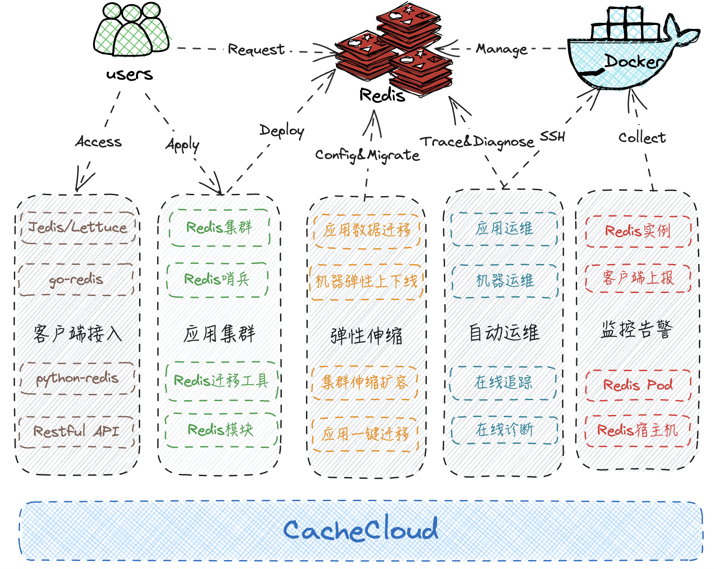
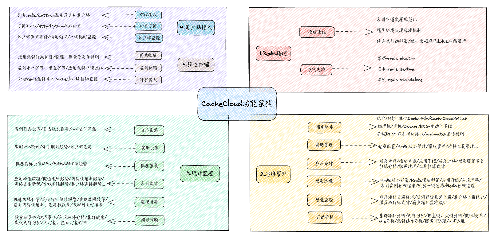
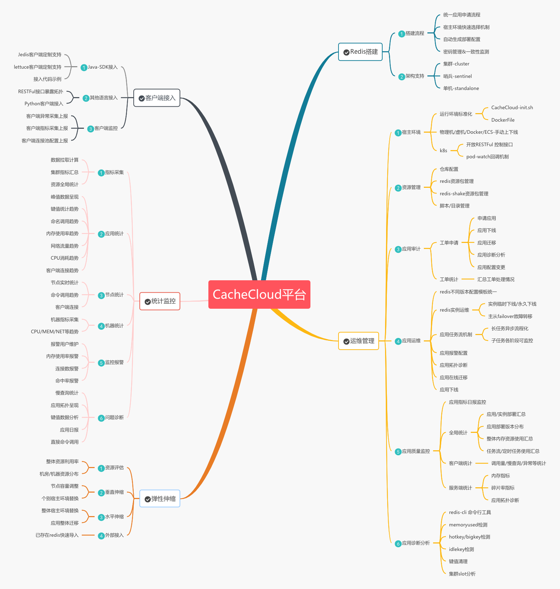
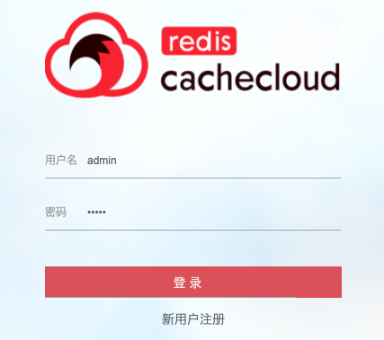
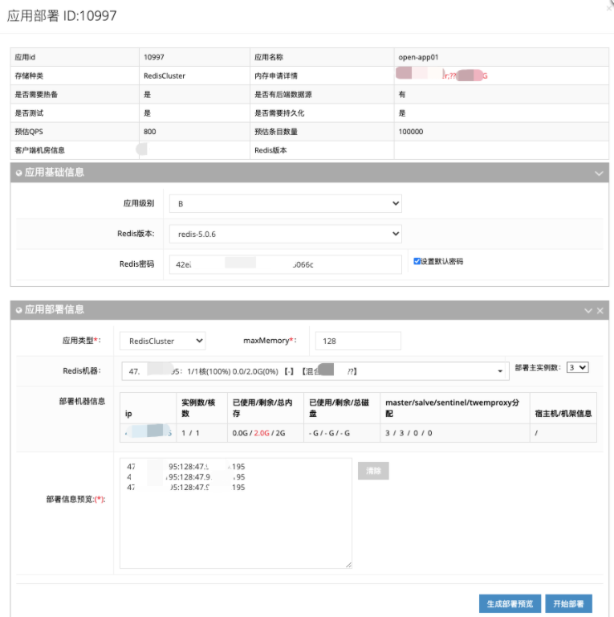
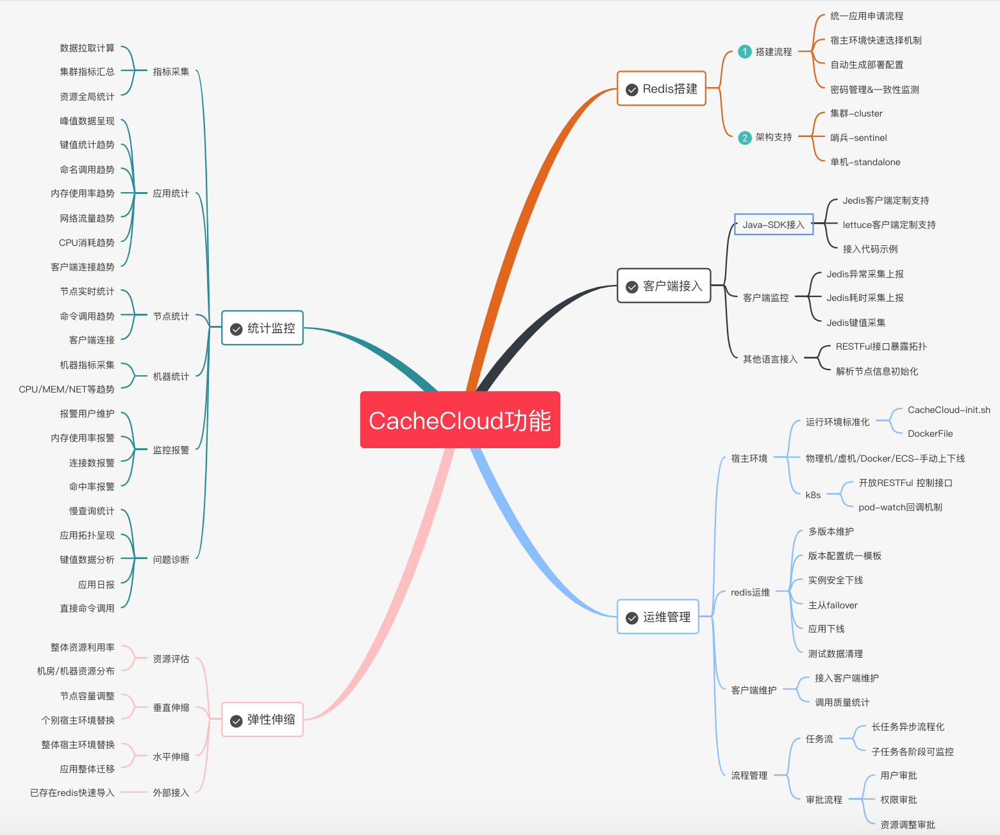

CacheCloud 提供企业级 Redis 私有云能力：Standalone / Sentinel / Cluster 三种架构一键部署、完善的统计监控、在线弹性伸缩、故障自动 Failover、简化运维流程。中小团队无需自研，直接本地部署 Apache-2.0 开源版本即可享用大厂级 Redis 运维后台。

Redis Standalone、Sentinel、Cluster 三种类型应用，无需手动配置初始化，Web 界面点一下就起。
机器、应用、实例多维度数据监控和统计界面，命令曲线、内存使用一眼看穿。
支持哨兵和集群高可用模式，主从切换自动化，降低人工干预风险。
在线扩容（垂直扩内存/水平加分片），流量扛不住直接加资源，业务零感知。
提供申请→运维→伸缩→修改全流程，标准化操作减少纯手工出错概率。
提供 Jedis / Lettuce 等主流客户端接入指引，元数据管理打通业务层。
Java 后端（Spring Boot）+ 前端（HTML/JS/CSS）+ PostgreSQL 元数据库，结构清晰。
| 部署模式 | 适用场景 | CacheCloud 支持 |
|---|---|---|
| Standalone | 单节点开发测试、中小型业务，无高可用需求 | ✅ 一键部署 |
| Sentinel | 需要主从自动切换的高可用场景，一主多从 | ✅ 自动 Failover |
| Cluster | 大规模数据、分片负载均衡、海量并发场景 | ✅ 水平分片扩容 |
技术栈：JDK 1.7+ · Spring Boot · MySQL（元数据存储）· SSH 协议管控物理机 · Jedis / Lettuce 客户端。Web UI 默认端口 9999，超级管理员账号 admin/admin。
# 1. 克隆项目 git clone https://github.com/sohutv/cachecloud.git cd cachecloud # 2. 初始化 MySQL 数据库（创建 cachecloud 库，UTF-8） mysql -u root -p cachecloud < script/cachecloud.sql # 3. 修改 online.properties 配置数据库连接 vim cachecloud-open-web/src/main/resources/online.properties # 4. 编译 mvn clean compile install -Ponline # 5. 启动 Web UI（默认端口 9999） mvn spring-boot:run # 开发模式 # 或部署到 Tomcat 生产运行 # 6. 打开浏览器访问 http://127.0.0.1:9999 # 管理员账号: admin 密码: admin
依赖：JDK 1.7+（建议 Oracle JDK，不要用 OpenJDK）· Maven 3.x · MySQL 5.5+ · SSH 免密打通需要管理的物理机。





以上截图均来自 sohutv/cachecloud 仓库，Apache-2.0 协议下授权使用。